Video para vender una lavadora de segunda en perfecto estado: $350.000 con 3 meses de garantía. Usa las fotos reales del equipo y termina llevando a WhatsApp. Abajo están las seis escenas con sus frames clave para pedir ajustes.
La misma entrada de marca del video anterior, un poco más rápida: gota, remolino, estallido y el logo se arma. El eslogan cambia a “Venta y alquiler de lavadoras”.
Locución opcional(Solo música y efectos)
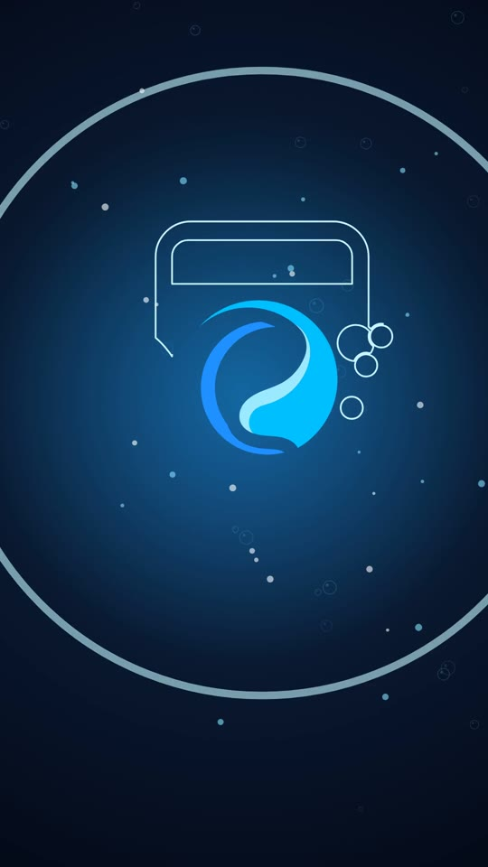
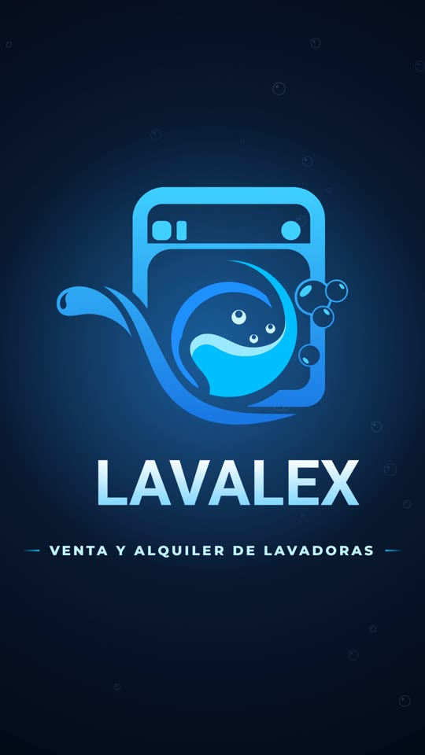
Ola de transición. “¡EN VENTA!” golpea en amarillo, “Lavadora de segunda” y la lavadora real (recortada de la foto frontal) sube flotando con rayos de luz, sombra y un brillo que la recorre. Entra el sello “8 kilos” y el chip “En perfecto estado”.
Locución opcional“¡Lavadora de segunda en venta, en perfecto estado!”
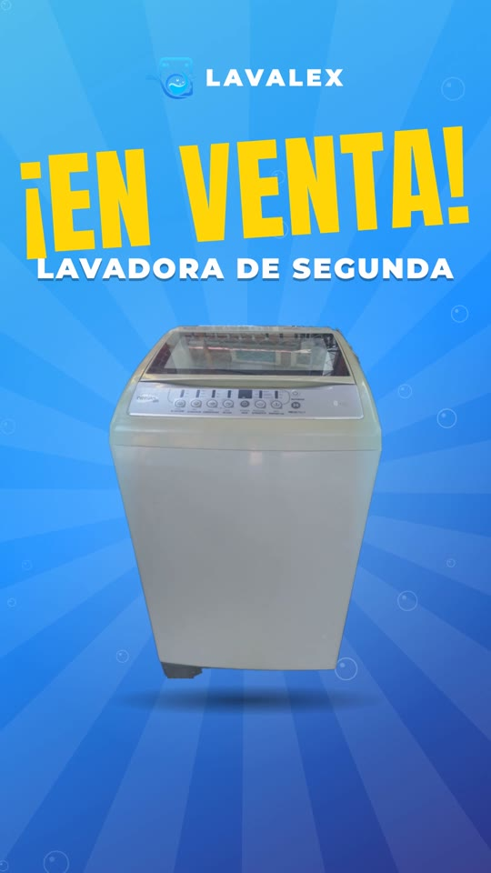
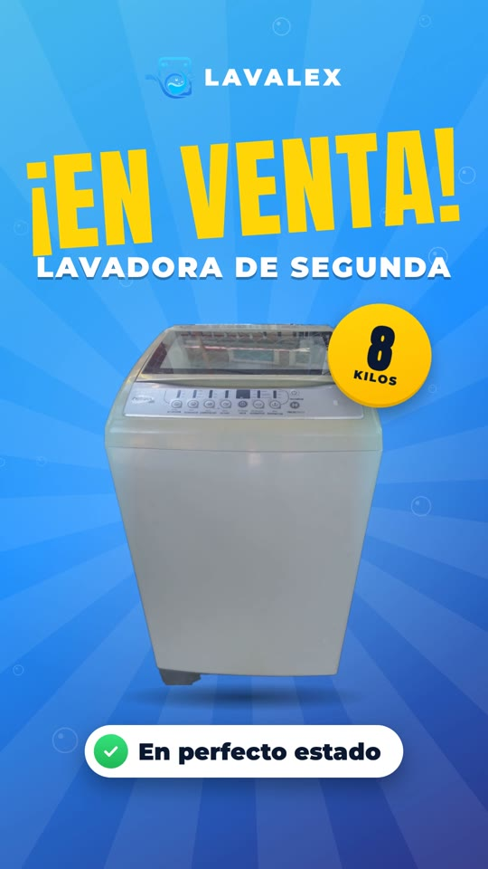
Destello y tres tarjetas de foto que entran y salen como un carrusel, con zoom suave y puntos de avance: panel digital con programas automáticos, tambor amplio de 8 kg y carga superior con tapa de vidrio.
Locución opcional“Panel digital, tambor de 8 kilos y carga superior.”
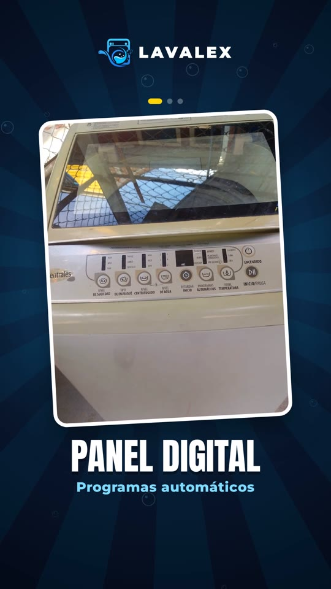
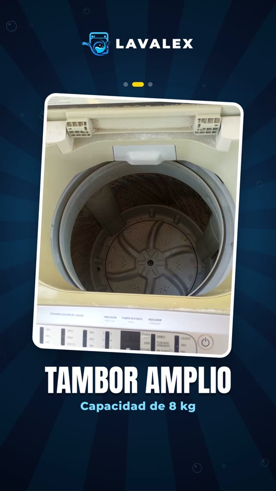
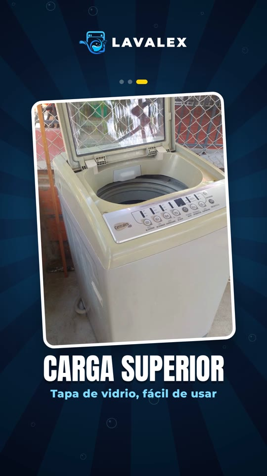
Barrido diagonal amarillo. “POR SOLO $350.000” golpea con extrusión 3D, confeti y temblor de cámara. Entra un escudo con check: “3 meses de garantía” y el chip “Revisada y probada”.
Locución opcional“Por solo trescientos cincuenta mil pesos, con tres meses de garantía.”
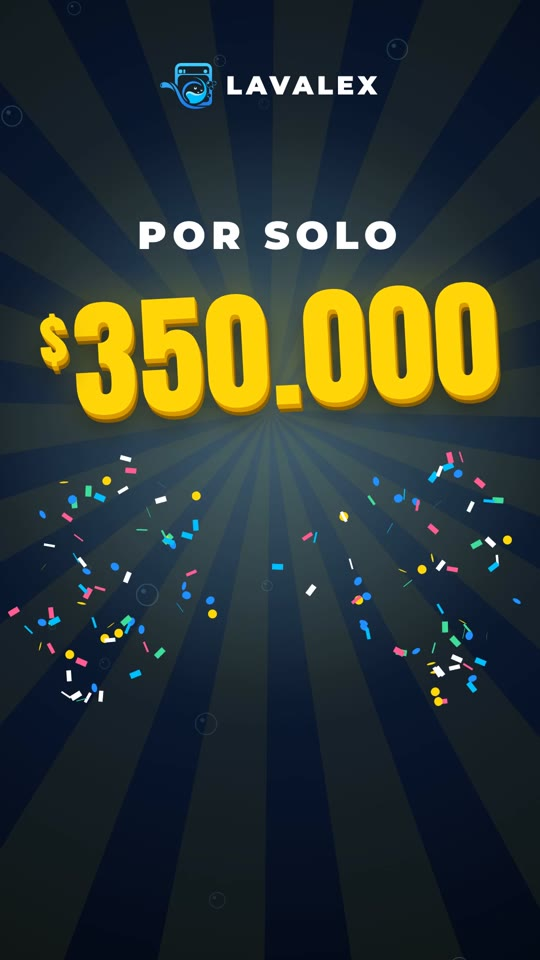
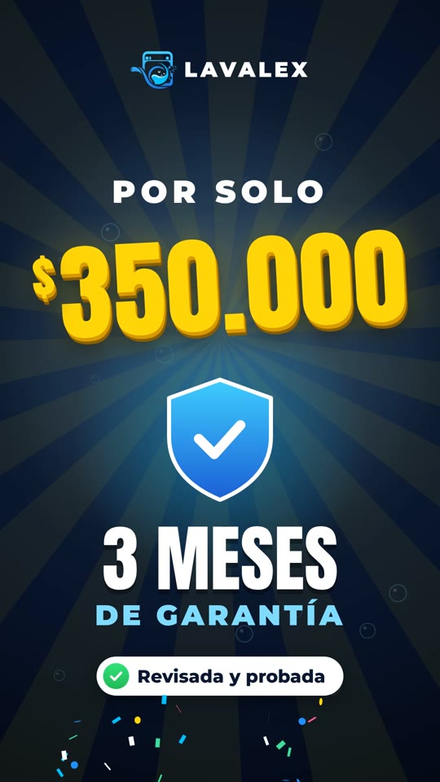
Iris circular. “¡Solo hay una! Escríbenos ya”, la lavadora vuelve con el sello “¡Que no te la ganen!” y aparece el botón de WhatsApp con el número y ondas de pulso.
Locución opcional“¡Solo hay una! Escríbenos ya al WhatsApp.”
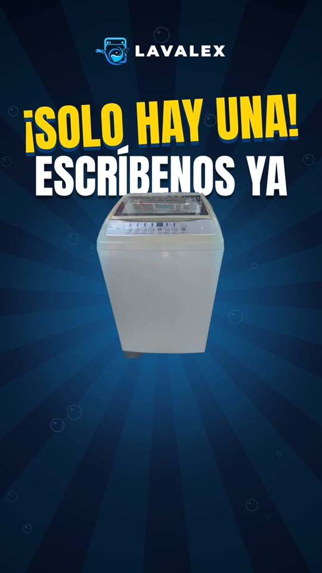
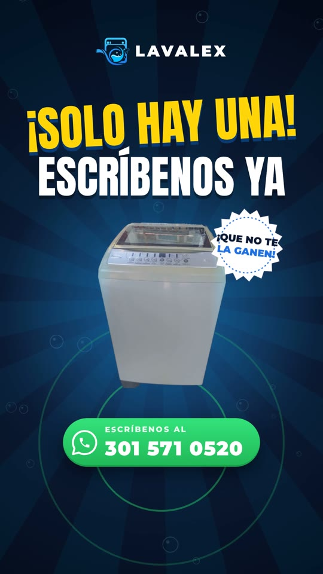
Destello y el logo se vuelve a armar con eslogan, botón de WhatsApp y “¡Te esperamos!”. Brillo final y fundido.
Locución opcional“LAVALEX. ¡Te esperamos!”
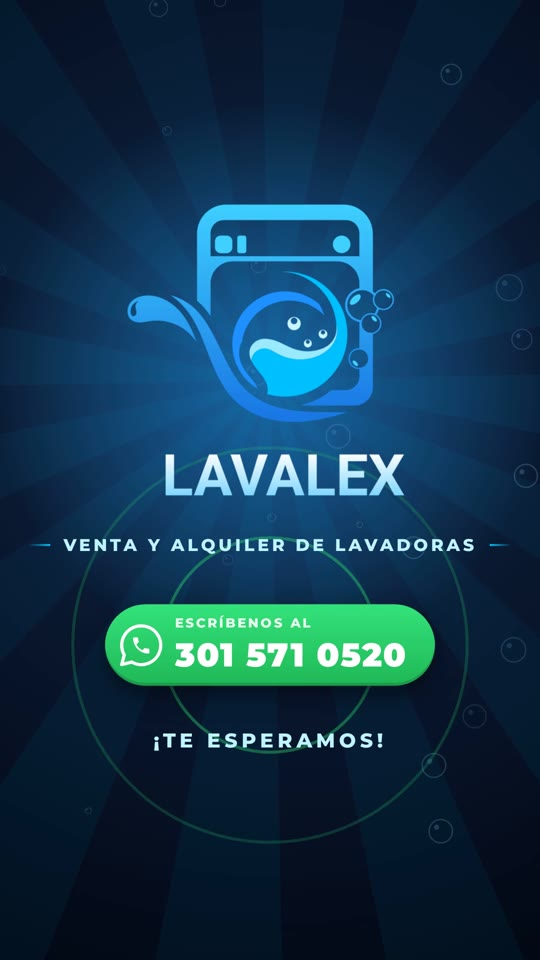